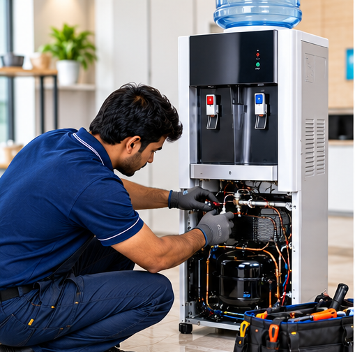
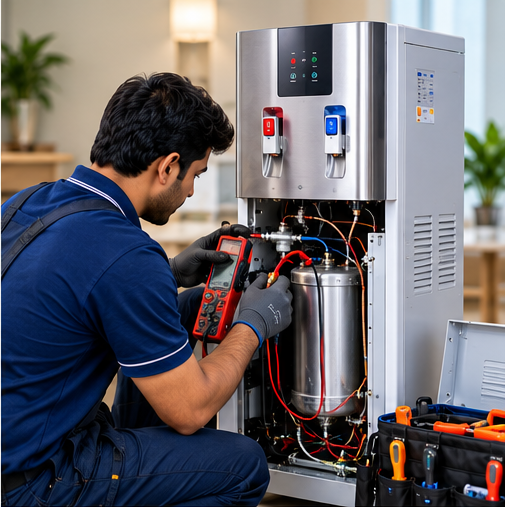
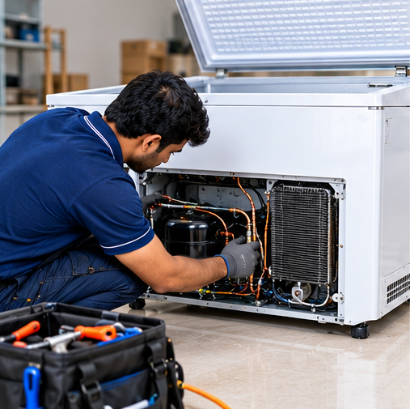
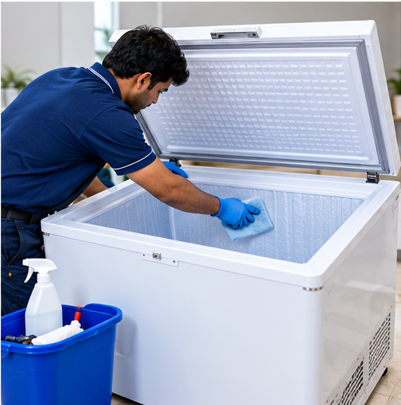
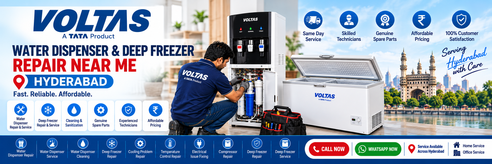

Service
Technicians
Spare Parts
Our Water Dispenser and Freezer Service Hyderabad Offers
Professional service for Water Dispensers & Deep Freezers to keep your appliances running efficiently.

Water Dispenser Service Hyderabad
Regular water dispenser servicing in Hyderabad keeps your dispenser running efficiently and extends its life. Our expert technicians provide complete service for all water dispenser models.
- 🛠️ Complete inspection of cooling & heating units
- ⚙️ Compressor and coil check-up
- 💧 Gas top-up (if required)
- ✨ Tightening of loose fittings and connections
- 📋 General performance tuning
Water Dispenser Cleaning Service
Water dispensers that are not cleaned regularly can build up algae, mineral deposits, and bacteria inside the tank and pipes. Our water dispenser cleaning service helps keep your drinking water safe, fresh, and hygienic.
- 🧹 Internal tank cleaning and sanitization
- 🚿 Pipeline and tap descaling
- ⚙️ Removal of algae, sludge, and mineral buildup
- ✨ Exterior cleaning and disinfection
- 🌿 Safe, food-grade cleaning agents

Hot & Cold Water Dispenser Repair
Hot and cold water dispensers work continuously throughout the day, which can put extra load on compressors, thermostats, and heating coils. Our technicians diagnose and repair cooling, heating, electrical, and temperature-related problems.
- 🔍 Complete inspection and diagnosis
- ⚙️ Compressor and thermostat check-up
- 💧 Gas top-up (if required)
- ⚡ Electrical issue fixing
- 📋 General performance tuning

Deep Freezer Repair Service
If your deep freezer is not cooling properly, making unusual noises, or struggling to maintain temperature, our expert technicians can diagnose and repair the problem quickly using genuine spare parts.
- 🔍 Complete inspection and diagnosis
- ⚙️ Compressor and cooling system check-up
- 💧 Gas refilling (if required)
- ⚡ Electrical issue fixing
- 🛠️ Replacement of faulty parts

Deep Freezer Cleaning Service
Regular deep freezer cleaning improves cooling efficiency, removes ice buildup and bad odour, and helps keep your freezer clean and hygienic. Our technicians provide thorough interior and exterior cleaning.
- 🧹 Interior cleaning and sanitization
- ❄️ Condenser coil cleaning
- 🗑️ Removal of excess ice buildup
- 🛡️ Odour removal and disinfection
- 🌿 Safe and effective cleaning products
Deep Freezer Gas & Compressor Service
Gas leakage, low refrigerant, and compressor problems can affect the cooling performance of your deep freezer. Our technicians inspect the cooling system, identify the fault, and provide reliable gas and compressor service.
- 🔍 Refrigerant level inspection
- 💧 Gas leak detection and repair
- ⚙️ Compressor check-up
- 🔌 Relay and overload protector check
- ❄️ Cooling performance testing
Water Dispenser & Deep Freezer
Repair Near Me Hyderabad in Emergency?
Looking for a water dispenser and deep freezer repair near me in Hyderabad? We provide same day doorstep water dispenser repair, deep freezer repair, service, and cleaning across the Hyderabad. Our expert technicians are available across Hyderabad to provide reliable appliance repair service in emergency. With one call you can hire a technician and get your water dispenser or deep freezer repaired at home.
